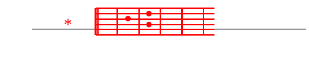

Cape 2
M.+K.A-Heri kwa mtu E-amchaye A-Bwana
D- *heri kwa mtu aenFdaye kwa njia Eyake.
M.D-Ataishi kwa kazi ya mikono Eyake,
atakuwa D-heri na kufurahia kila Ewema:
mFkewe kama mzabibu uzaao kwenye kiini cha nEyumba;
waFnawe kama miche ya mizeituni wakizunguka meza Eyake.
M.+K.A-Heri kwa mtu...
M.D-Hivyo atabarikiwa mtu amchaye BEwana:
D-Bwana akubariki toka SiEon!
UFone uheri wa YerusaElemu!
FNaam, ukawaone wana wa waEnao!
M.+K.A-Heri kwa mtu...
